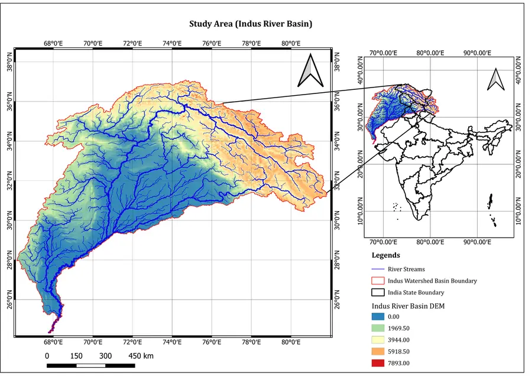
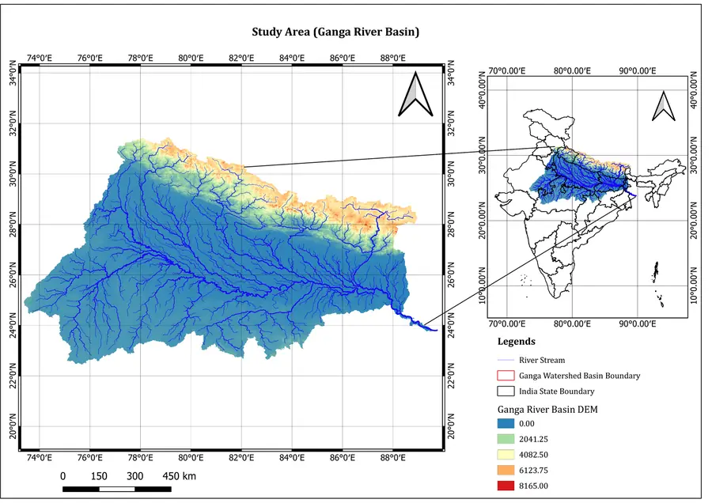
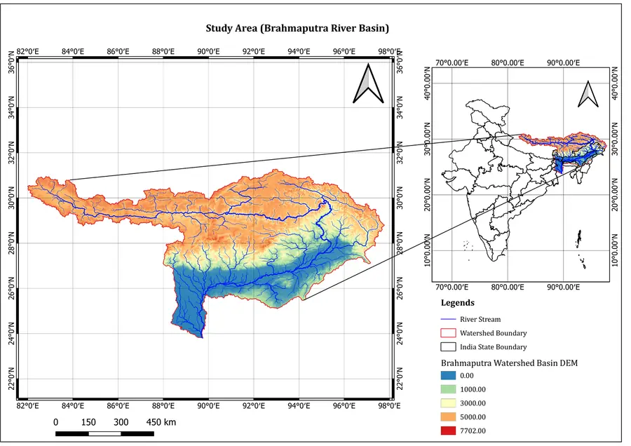
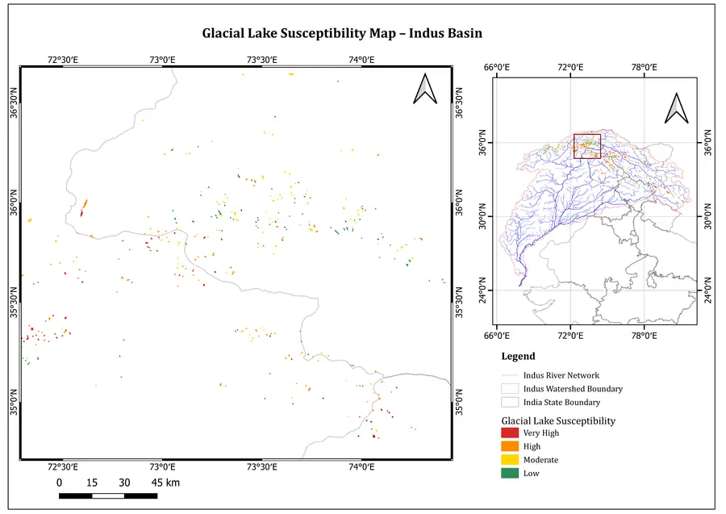
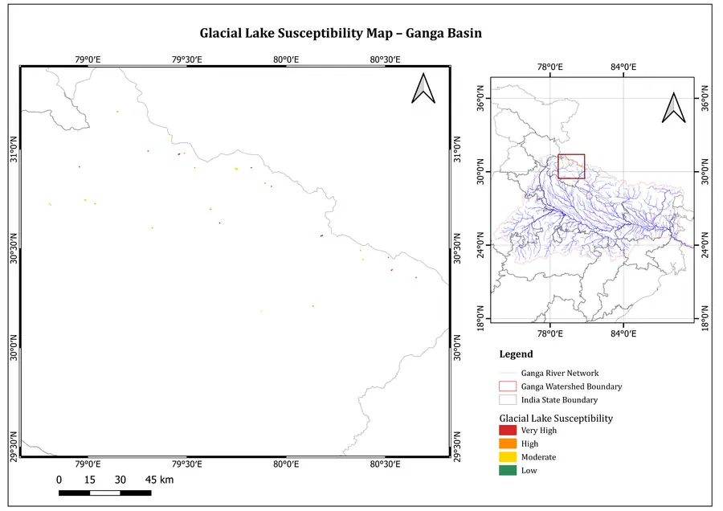
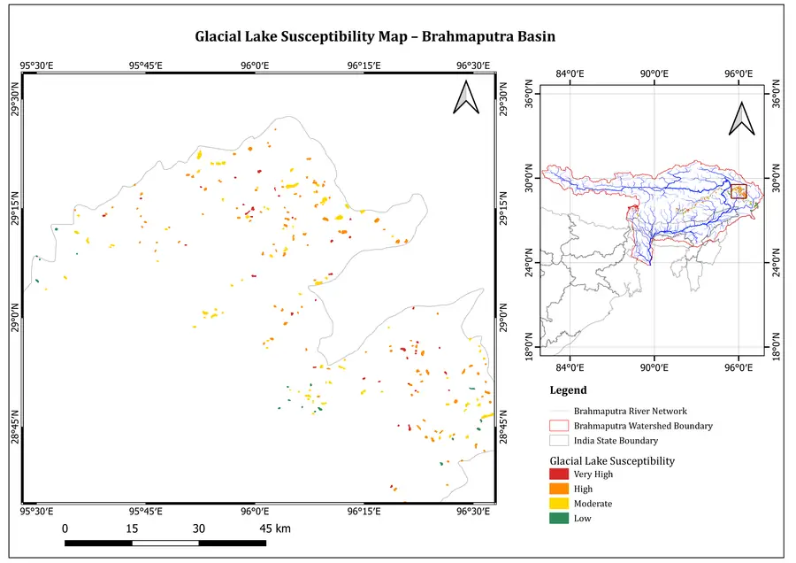
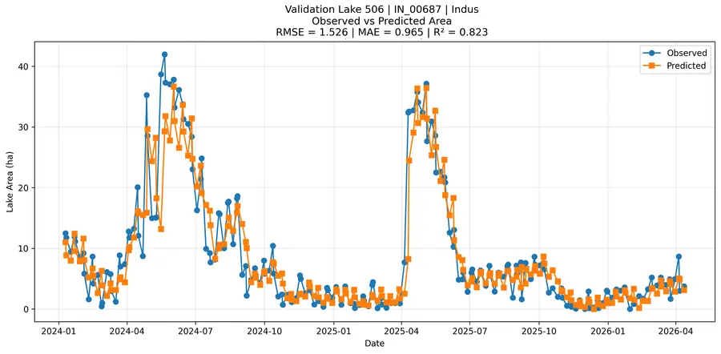
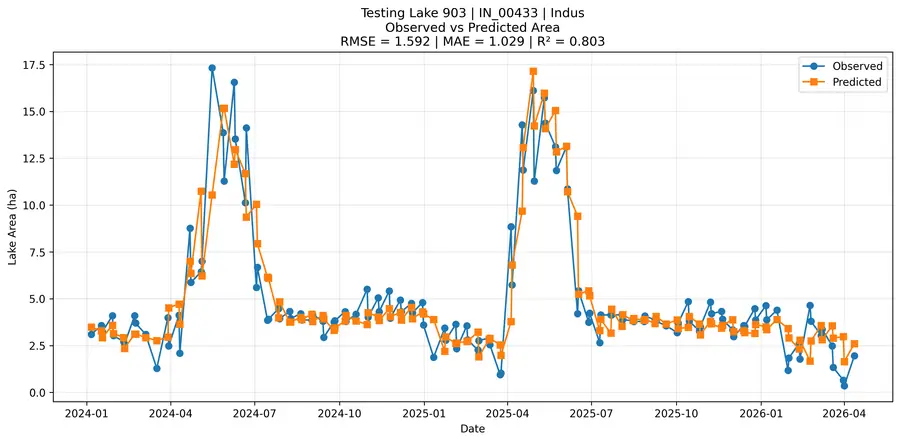
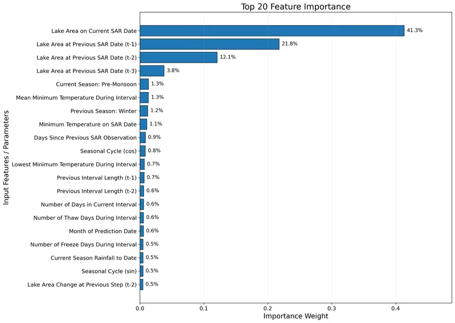
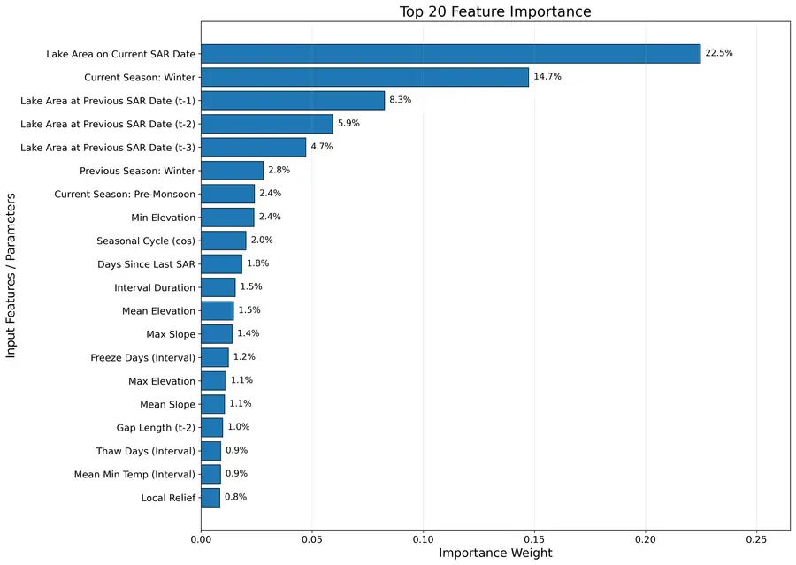

CE605 Remote Sensing of Land and Water Resources, 2026
Assessment of GLOF Susceptibility Across Major Himalayan River Basins
A remote sensing and machine learning study for mapping glacial lake outburst flood susceptibility across the Indus, Ganga, and Brahmaputra river basins.
Project Overview
The project examined how glaciological, topographical, and climatic controls influence glacial lake outburst flood susceptibility across major Himalayan basins. It combined multi-source remote sensing data with a machine learning framework to classify and map basin-wise susceptibility patterns.
The analysis focused on lake dynamics, glacier proximity, topography, rainfall, temperature, and freeze-thaw indicators, with the final output designed to support prioritization of potentially hazardous glacial lakes.
Data And Method
Lake Dynamics
Sentinel-1 SAR lake area, lake expansion, and shape indicators.
Topography
ALOS World 3D DEM, elevation gradients, terrain slope, aspect, and relief.
Climate
CHIRPS rainfall and CPC/MODIS temperature indicators, including extremes.
Machine Learning
Basin-wise modelling with XGBoost-style susceptibility prediction and validation.
Basin Maps



Key Results
- Developed basin-wise GLOF susceptibility maps using remote sensing and machine learning.
- Model performance was strong across basins, with R2 values approximately between 0.75 and 0.91.
- Lake area change and glacier proximity emerged as dominant drivers across all basins.
- Trend-based modelling supported prioritization of potentially hazardous glacial lakes.
Basin-Specific Controls
Indus
Rainfall and freeze conditions were important drivers.
Brahmaputra
Temperature and thaw dynamics showed strong influence.
Ganga
Elevation and freeze conditions were key basin-specific controls.
Susceptibility Outputs



Model Evidence
Indus Basin
Validation R2: 0.847
Test R2: 0.867
Important controls included area trend, glacier proximity, slope, freeze trend, thaw trend, and rainfall trend.
Brahmaputra Basin
Validation R2: 0.906
Test R2: 0.820
Important controls included area change, glacier proximity, slope, thaw dynamics, temperature trend, and rainfall trend.
Ganga Basin
Validation R2: 0.822
Test R2: 0.748
Important controls included area change, glacier proximity, elevation, terrain slope, freeze conditions, and thaw dynamics.



